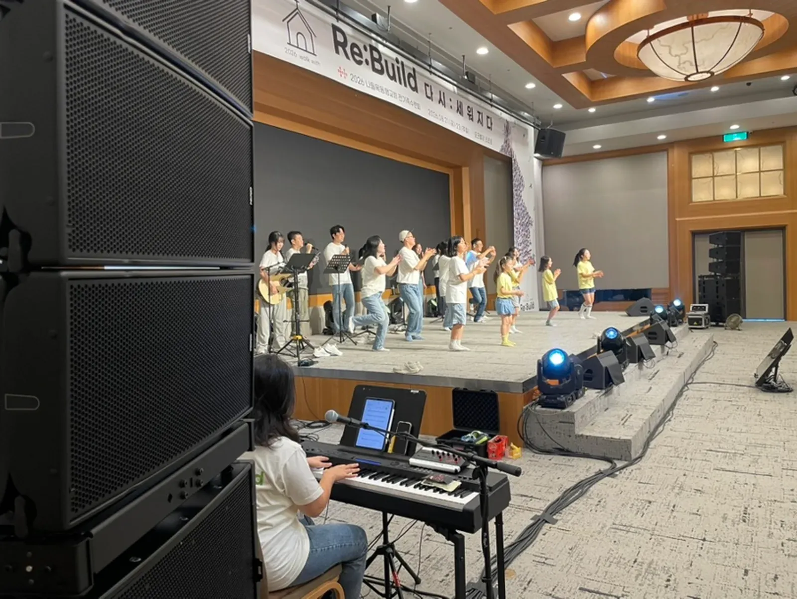
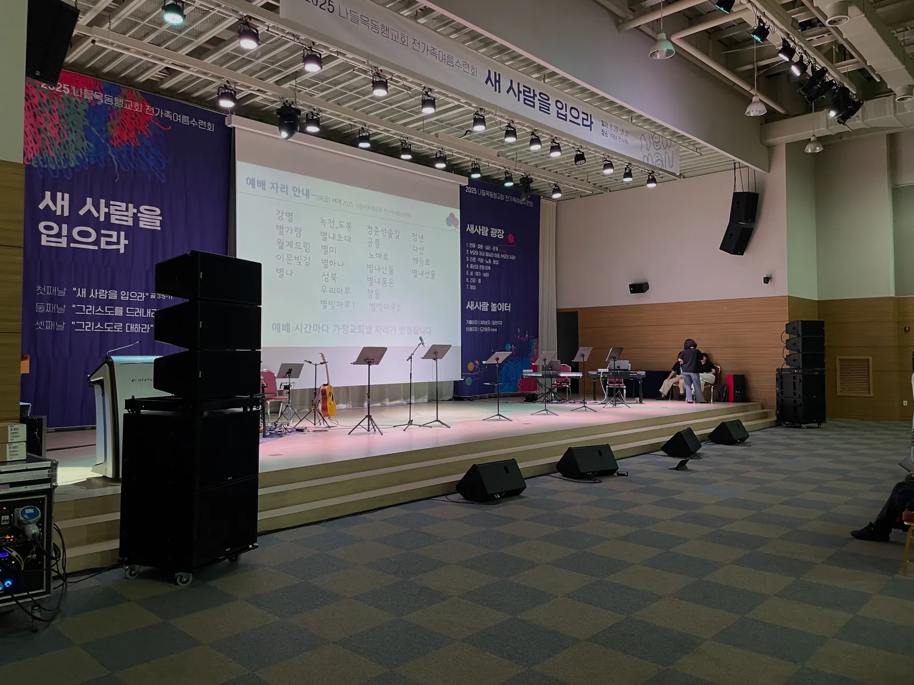
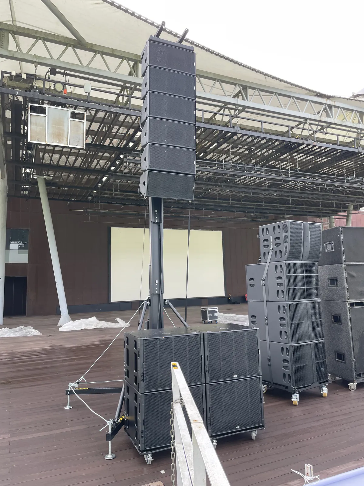

남양주 교회 수련회 음향은 「설교는 맨 뒷줄까지 또렷하게, 찬양팀은 서로의 소리를 잘 듣게」 두 가지를 먼저 정하면 나머지 준비가 따라옵니다. 수련회장에 설치된 장비만으로는 풀밴드 찬양과 모니터를 감당하기 어려울 수 있어, 공간 크기와 진행 순서를 먼저 확인하는 것이 순서입니다. 제이식스미디어 사무실이 있는 남양주에서 수련회 음향을 준비할 때 챙길 것을 정리했습니다.

- 수련회 음향은 객석으로 나가는 소리(메인 스피커)와 무대 위에서 듣는 소리(모니터)를 나눠서 준비합니다.
- 수련회장에 있는 장비로 밴드 찬양까지 감당할 수 있는지 먼저 묻고, 모자라면 수련회에 맞춘 음향 시스템을 따로 들입니다.
- 넓고 벽이 단단한 홀은 소리가 울리기 쉬워, 설치 뒤 스피커 각도와 위치를 다시 맞출 시간을 일정에 넣어 둡니다.
- 문의 전에 날짜 · 설치 가능한 시간, 홀 크기, 예상 인원, 찬양팀 편성과 순서를 정리해 두면 구성 제안이 빨라집니다.
1. 남양주 교회 수련회 음향, 두 갈래로 나눠 생각합니다
수련회 음향은 크게 두 갈래입니다. 하나는 객석으로 나가는 소리(메인 스피커)입니다. 설교와 광고, 찬양이 맨 뒷줄과 가장자리 자리까지 또렷하게 닿아야 합니다. 다른 하나는 무대 위 사람들이 듣는 소리(모니터)입니다. 찬양팀이 서로의 악기와 노래를 들어야 박자와 음정이 흔들리지 않습니다. 둘 중 하나만 챙기면 「객석에서는 잘 들리는데 찬양팀이 힘들다」거나 그 반대가 됩니다.
| 구분 | 무엇을 위한 소리 | 준비할 것 |
|---|---|---|
| 메인 스피커 | 설교 · 찬양을 객석 뒷줄까지 | 공간 크기에 맞는 스피커와 위치 · 각도 |
| 모니터 | 찬양팀 · 인도자가 자기 소리를 듣기 | 모니터 스피커(웨지) 또는 무선 인이어 |
| 마이크 | 설교 · 광고 · 보컬 · 악기 | 핸드 · 핀 무선마이크와 악기용 마이크 수 |
| 믹서 | 모든 소리를 모아 조절 | 디지털 믹서와 현장에서 운영할 음향 엔지니어 |
제이식스미디어는 교회 예배 · 세미나 · 수련회에서 찬양팀 밴드와 설교가 모두 또렷하게 들리도록 공간에 맞춰 스피커 위치와 각도를 잡고, 모니터 시스템까지 준비합니다. 그래서 상담할 때도 「몇 명이 오느냐」보다 「어떤 순서로, 어떤 편성으로 찬양하느냐」를 먼저 여쭙니다.
2. 수련회장 장비로 충분한지 먼저 확인합니다
수련회는 리조트 · 수양관 · 교육관처럼 음향 장비가 이미 갖춰진 곳에서 열리기도 합니다. 그 장비가 강연용인지, 밴드 찬양까지 감당하는지에 따라 준비가 크게 달라집니다.
원주 오크밸리리조트 그랜드볼룸에서 열린 나들목동행교회 전가족수련회가 그런 경우였습니다. 앞뒤 약 30m, 좌우 약 17m 되는 큰 공간이었는데, 리조트에 설치된 장비로는 풀밴드 찬양과 모니터링 시스템을 해결하기 어려워 수련회에 맞춘 음향 시스템을 따로 준비해 설치했습니다. 자세한 과정은 원주 수련회 이야기에 사진과 함께 정리해 두었습니다.
- 설치된 스피커가 어디에 있는지, 밴드 찬양 음량을 낼 수 있는지
- 무대 위에 모니터 스피커가 있는지
- 기존 믹서에 외부 장비를 연결할 수 있는지, 아니면 따로 들여야 하는지
- 장비를 들여올 수 있는 시간(전날 저녁인지 당일 아침인지)과 반입 동선
- 무대 근처 전기 콘센트 위치와 쓸 수 있는 회로

3. 넓은 홀은 울림부터 잡습니다
벽과 천장이 단단하고 넓은 홀은 소리가 벽에 부딪혀 되돌아오며 울리기 쉽습니다. 원주 그랜드볼룸에서도 뒷벽과 좌우 벽에서 생기는 플러터 에코를 최대한 피하려고 스피커 각도와 위치를 여러 번 조정했습니다. 그래도 공간 자체의 울림이 많은 편이었습니다. 이런 공간에서는 장비를 늘리는 것보다 스피커를 어디에, 어떤 각도로 두느냐가 먼저입니다.
- 설치 시간에 여유를 둡니다 — 스피커를 세운 뒤 소리를 들어 보며 각도와 위치를 다시 맞출 시간이 필요합니다.
- 리허설 때 객석 뒷줄과 가장자리 자리에 직접 앉아 설교 마이크 소리를 들어 봅니다.
- 찬양팀 리허설은 실제 음량으로 합니다. 작은 소리로 맞춰 두면 본 순서에서 울림이 갑자기 커집니다.
- 사람이 들어차면 소리가 달라지니, 첫 집회 시작 직후에 한 번 더 들어 보고 조절합니다.
4. 찬양팀 모니터는 편성표로 정리합니다
모니터를 몇 개, 어디에 둘지는 찬양팀 편성으로 정합니다. 인도자 · 보컬 · 건반 · 기타 · 베이스 · 드럼이 각자 무엇을 더 듣고 싶은지 미리 받아 두면 리허설 시간이 줄어듭니다. 무대가 좁거나 소리가 울리는 공간에서는 바닥 모니터 대신 무선 인이어로 각자 필요한 소리만 듣게 하는 방법도 있습니다.
| 자리 | 마이크 | 모니터에서 듣고 싶은 것(예시) |
|---|---|---|
| 인도자 | 핸드 무선마이크 | 자기 목소리 · 건반 |
| 보컬 | 핸드 무선마이크 | 인도자 · 자기 목소리 |
| 건반 | 악기 연결 | 인도자 · 드럼 |
| 드럼 | 드럼 마이크 | 베이스 · 인도자 |
| 설교자 | 핀 또는 핸드 무선마이크 | 따로 두지 않고 객석 스피커로 |
위 표는 예시입니다. 실제 편성과 곡 순서를 알려 주시면 그에 맞춰 마이크 수와 모니터 배치를 다시 짭니다. 무선마이크를 여러 개 쓸 때 챙길 점은 따로 정리한 글을 참고해 주세요.

5. 남양주 수련회 음향 견적 문의 전에 정리할 것
제이식스미디어 사무실은 경기도 남양주시 순화궁로 282 에이스하이엔드타워별내 319호에 있습니다. 방문 상담은 미리 연락 주시고 오시면 됩니다. 수련회 장소가 다른 지역이어도 지역과 일정을 알려 주시면 가능 여부를 안내합니다.
자동 견적서에서 필요한 항목을 골라 보내 주시면 확인 후 안내합니다. 견적서에는 단가가 「협의」로 나오고, 담당자가 현장 여건을 확인한 뒤 확정 견적을 보냅니다.
| 자동 견적서 항목 | 언제 고르나 |
|---|---|
| 교회행사 음향 · 조명 | 수련회 음향 · 조명 운영을 통째로 맡길 때 |
| 음향 (중형) | 수련회 · 실내 공연 · 풀밴드 찬양 규모일 때 |
| 무선 인이어 · 퍼스널 모니터 | 찬양팀이 각자 모니터를 들어야 할 때 |
| 모니터 스피커 | 무대 바닥 모니터(웨지)가 필요할 때 |
| 무선 마이크 추가 | 설교 · 광고 · 보컬 마이크가 더 필요할 때 |
| 음향 엔지니어 | 현장 믹싱과 운영을 맡길 때 |
함께 알려 주시면 좋은 것은 날짜와 설치 가능한 시간, 장소와 홀 크기, 예상 인원, 찬양 · 설교 · 특강 순서입니다. 정확하지 않아도 괜찮습니다. 지역 안내는 남양주 음향 · 설치 안내, 마이크 준비는 남양주 무선마이크 글에 따로 정리했습니다.
자주 묻는 질문
수련회장에 음향 장비가 있는데 따로 빌려야 하나요?
설치된 장비가 강연용인지, 밴드 찬양까지 감당하는지에 따라 다릅니다. 스피커 · 모니터 · 믹서 현황을 알려 주시면 무엇을 더해야 할지 함께 봅니다.
찬양팀만 인이어를 쓸 수 있나요?
자동 견적서의 「무선 인이어 · 퍼스널 모니터」는 채널 단위로 고르는 항목입니다. 편성을 알려 주시면 필요한 채널 수를 맞춰 봅니다.
설치는 언제 하나요?
장소에서 장비를 들일 수 있는 시간에 맞춥니다. 소리를 들어 보고 스피커 각도를 다시 맞출 시간이 필요하니, 설치 가능한 시간을 문의할 때 함께 알려 주세요.